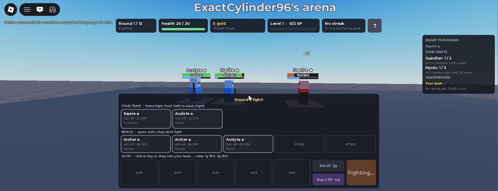

Autobattler is a Roblox game in the style of Teamfight Tactics. You buy units from a shop, place them on a board, and watch them fight 12 rounds of enemy teams on their own. I designed and built it solo in Luau, and it's published on Roblox, so you can play it right now!
Why I Built It
TFT is my favorite game, so I already knew how it should feel, but Roblox Studio was completely new to me. Building a game I understood inside a tool I didn't seemed like the best way to learn Studio and find its limits, including its AI building features!
I also wanted to see what it's like to be a creator on Roblox. Roblox is a two-sided platform, with players on one side and creators on the other, and I think you need to understand both to design for everyone on it.
How It Came Together
I built it in four rounds, and the first version had just the core loop: a shop, a board and bench, combining three copies of a unit into a stronger one, and eight enemy rounds. Next I added player levels, traits, and abilities that fire when a unit's mana bar fills. The third round was about making fights feel good, with floating damage numbers, attack and death sounds, and small character models for each unit. The last round added an economy with interest and streak bonuses, more units, a global leaderboard, and a full UI redesign.
Designing for a First-Time Player
Nobody else playtested it, so I played a lot of runs myself and kept noticing things I only understood because I've played so much TFT. A new player wouldn't have that background, so filling those gaps became the redesign. The game now opens with a how-to-play screen, and hovering over any unit shows what it does. A side panel lists the next enemy team, your active traits, and the leaderboard. Units drag between the shop, your team, and the bench, and dropping one on the shop sells it.

The Shop Card
Each shop card shows a unit's name, star level, health, damage per second, traits, ability, and cost, which is the minimum you need to know what a unit will actually do before you buy it. I could have gone further with abilities and traits, but I kept them simple on purpose.

Balancing With a Bot
To tune the 12 enemy rounds, I wrote a simulation where a bot plays full runs through the same game logic the server uses and prints the win rate for each round. I used it to find rounds that were too hard or too easy without playing every run by hand.
Under the Hood
The server owns all of the game state, so players can't edit their gold or units from their side. Each player gets their own session and arena, which means several people can play on one server without sharing a board.
Through This Project I've Learned and Practiced